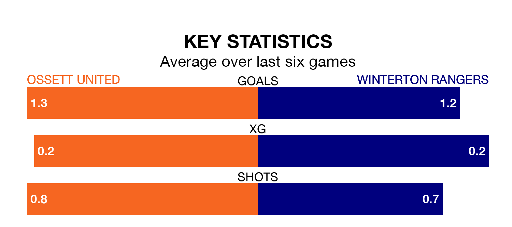

Ossett United face Winterton Rangers at the Stade France Ingfield on Saturday looking to secure a first win in five Northern Premier League – Division One East games.
Ossett have lost one and drawn three matches since they last earned three points – against Stocksbridge Park Steels on October 28.
They face a Winterton side who have won just one and lost three over that time.
Winterton are 16th in the table after 16 games, of which they have won five and lost 11, earning 15 points.
Ossett are one place ahead of Rangers in 15th, with four wins and four draws putting them on 16 points.
With 15 goals in 16 games so far this season, the visitors are the league's lowest scorers with 0.9 goals per game. And they are conceding more than average, letting in 39 goals at a rate of 2.4 per game.
United are also below average scorers, with 1.1 goals per game, compared to a league average of 1.7. They have conceded 1.8 goals per game.
Ossett's last match was on November 25, a 1-1 draw against Bridlington Town.
Winterton lost 3-0 against Dunston UTS last time out, also on November 25.
